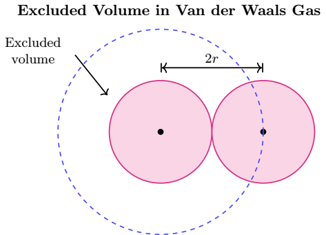
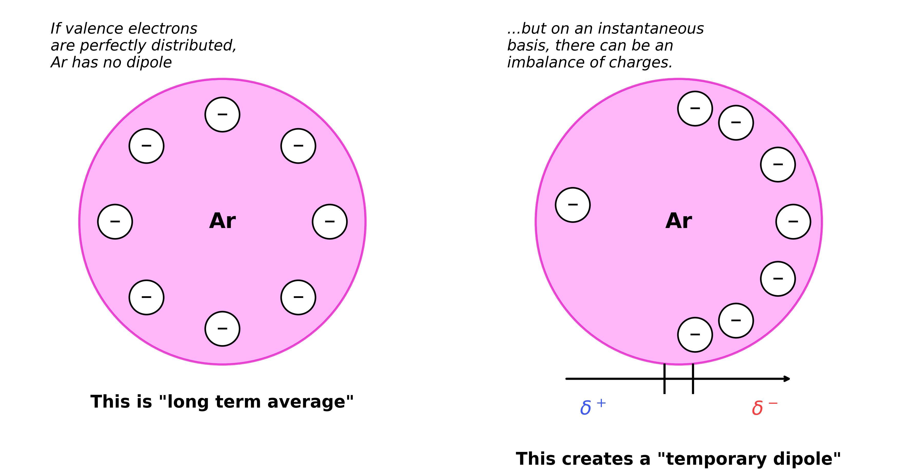
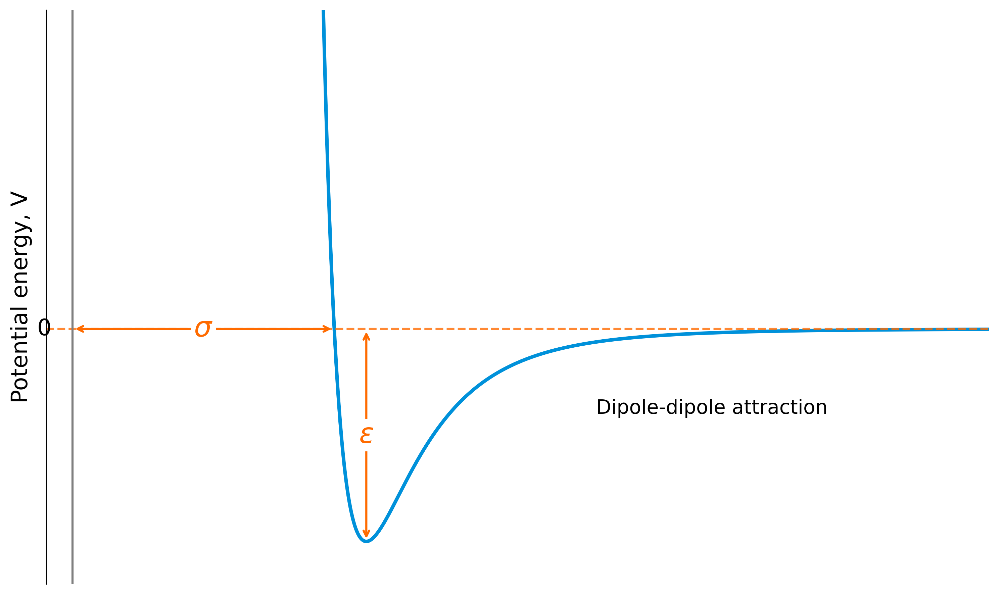

Section 1.4 Van der Waals Equation
Limitations of the Ideal Gas Law The ideal gas law
\begin{equation*}
PV =nRT
\end{equation*}
assumes:
-
Molecules have zero volume.
-
No intermolecular forces except during perfectly elastic collisions.

Real gases deviate significantly at high pressure (molecules are close together) and low temperature (kinetic energy is low, attractions dominate). The compressibility factor
\begin{equation*}
Z= \frac{PV}{nRT} \quad \text{ deviates from 1.}
\end{equation*}
Van der Waals equation is a thermodynamic equation of state that describes the behavior of real gases. It is an improvement over the ideal gas law by accounting for the finite size of gas molecules and the intermolecular forces between them. The equation is given by:
\begin{equation*}
\left(P+\frac{an^2}{V^2}\right)\left(V-nb\right) = nRT
\end{equation*}
where \(n, P, T, V, R \) are number moles of gas, the observed pressure pressure, absolute temperature, total volume of the container, and universal gas constant, respectively. Also, \(a\) is van der Waals constant for attractive forces (units: \(L^2\, atm \,mol^{-2} \) or \(Pa \, m^6 \,mol^{-2}\)) and \(b\) is van der Waals constant for finite molecular volume (units: \(L\, mol^{-1}\) or \(m^3\, mol^{-1}\))
In kinetic theory of gases, we neglect the volume of the gas molecules and the intermolecular forces between them. As a result, the ideal gas law does not holds good for real gases, especially at high pressures and low temperatures. The van der Waals equation accounts for these factors by introducing two parameters, \(a\) and \(b\text{,}\) which represent the strength of the intermolecular forces and the volume occupied by the gas molecules, respectively.

Correction for finite size: The term \(nb\) in the equation accounts for the finite size of gas molecules. It represents the volume occupied by the gas molecules themselves, which reduces the available volume for the gas to occupy. This correction is important at high pressures where the gas molecules are closely packed together.
Evaluation of V: Let r be the radius of a molecule, then the volume occupied by a molecule is \(\frac{4}{3}\pi r^3\text{.}\) If there are n molecules, then the total volume occupied by the molecules is \(\frac{4}{3}\pi r^3 n\text{.}\) Hence, the available volume for the gas to occupy is given by \(V - \frac{4}{3}\pi r^3 n\text{.}\) The correction term \(nb\) in the van der Waals equation accounts for this reduction in available volume and allows us to calculate the actual volume of the gas using the equation. Here, \(b\) is a constant that represents the effective volume occupied by each gas molecule (also called excluded volume or co-volume ), and it is determined experimentally for each gas.
Correction for intermolecular forces: The term \(an^2/V^2\) in the equation accounts for the intermolecular forces between gas molecules. It represents the attractive forces between gas molecules, which reduce the pressure exerted by the gas on the walls of the container. This correction is important at low temperatures where the gas molecules are moving more slowly and are more likely to interact with each other.

Evaluation of P: Inward pull reduces the momentum with which molecules strike the walls of the container, leading to a decrease in pressure compared to the ideal gas law. Hence,
\begin{equation*}
p_{ideal} - p_{inter}= P
\end{equation*}
where \(p_{ideal}\) is the pressure predicted by the ideal gas law and \(P\) is the actual pressure of the gas. The correction term \(an^2/V^2\) accounts for this difference and allows us to calculate the actual pressure of the gas using the van der Waals equation.
Force on a molecule is \(\propto\) to the number of attracting molecules, and number of attracting molecules is \(\propto\) number density. Hence, force on a molecule \(F \propto \frac{n}{V}.\) Molecules striking the unit surface area is \(\propto\) to the number density of molecules, which is \(n/V\text{.}\) Hence, pressure is \(\propto\) to the product of the force on a molecule and the number of molecules striking the unit surface area, which is \(n^2/V^2\text{.}\) The correction term \(an^2/V^2\) in the van der Waals equation accounts for the attractive forces between gas molecules, which reduces the pressure exerted by the gas on the walls of the container.
The van der Waals equation is a more accurate representation of the behavior of real gases compared to the ideal gas law. It is particularly useful for describing the behavior of gases at high pressures and low temperatures, where the ideal gas law fails to provide accurate predictions. However, it is important to note that the van der Waals equation is still an approximation and may not accurately describe the behavior of all real gases under all conditions.
Subsection 1.4.1 Derivation of van der Waals Equation
From ideal gas law, we have \(PV=nRT\text{.}\) The van der Waals equation is derived by making two corrections to the ideal gas law:
-
Correction for finite size of gas molecules: The volume available for the gas to occupy is reduced by the volume occupied by the gas molecules themselves. This correction is represented by the term \(nb\) in the van der Waals equation, where \(b\) is a constant that represents the effective volume occupied by each gas molecule. The available volume for the gas to occupy is given by \(V - nb\text{,}\) where \(V\) is the total volume of the container and \(n\) is the number of moles of gas.
-
Correction for intermolecular forces: The attractive forces between gas molecules reduce the pressure exerted by the gas on the walls of the container. This correction is represented by the term \(an^2/V^2\) in the van der Waals equation, where \(a\) is a constant that represents the strength of the intermolecular forces between gas molecules. The actual pressure of the gas is given by \(P = p_{ideal} - an^2/V^2\text{,}\) where \(p_{ideal}\) is the pressure predicted by the ideal gas law and \(P\) is the actual pressure of the gas.
By substituting these corrections into the ideal gas law, we obtain the van der Waals equation:
\begin{equation*}
\left(P+\frac{an^2}{V^2}\right)\left(V-nb\right) = nRT
\end{equation*}
Excluded volume: The term \(nb\) in the van der Waals equation accounts for the finite size of gas molecules. It represents the volume occupied by the gas molecules themselves, which reduces the available volume for the gas to occupy. This correction is important at high pressures where the gas molecules are closely packed together. From:
Excluded volume for these two molecules is \(\frac{4}{3}\pi (2r)^3 =V'\text{.}\) Hence, excluded volume per molecule = \(V'/2 = \frac{2}{3}\pi (2r)^3 =b\text{.}\) Thus,
\begin{equation*}
PV = nRT \\
P(V-nb) = nRT \\
P= \frac{nRT}{V-nb}
\end{equation*}
If we include the molecular attraction, then the pressure is reduced by \(an^2/V^2\text{.}\) Hence,
\begin{equation*}
P = \frac{nRT}{V-nb} - \frac{an^2}{V^2}`
\end{equation*}
Where \(a\) and \(b\) are the van der Waals constants. The molecule near the wall hits the wall with less momentum due to the inward pull of the other molecules.
\begin{equation*}
P=\frac{F}{A} = \frac{dp}{dt}\frac{1}{A}
\end{equation*}
It is observed that the decrease in pressure is proportional to the product of the force on a molecule due to the inward pull of the other molecules and the number of molecules striking the unit surface area. The force on a molecule is proportional to the number of attracting molecules, which is proportional to the number density of molecules. Hence, the force on a molecule is proportional to \(n/V\text{.}\) The number of molecules striking the unit surface area is also proportional to the number density of molecules, which is \(n/V\text{.}\) Hence, the decrease in pressure is proportional to the product of the force on a molecule and the number of molecules striking the unit surface area, which is \(n^2/V^2\text{.}\) Therefore, the correction term for intermolecular forces is
\begin{equation*}
an^2/V^2\text{,}
\end{equation*}
where \(a\) is a constant that represents the strength of the intermolecular forces between gas molecules.
Subsection 1.4.2 Critical Point
Critical point is the point at which the liquid and gas phases of a substance become indistinguishable. At the critical point, the properties of the liquid and gas phases become identical, and the substance exists in a supercritical state. The critical point is characterized by a critical temperature (\(T_c\)), critical pressure (\(P_c\)), and critical volume (\(V_c\)). At this point the system is in equilibrium between liquid and gaseous phases, i,e., density of liquid is equal to the density of gas. Van der Waals showed that this is a saddle point of his equation. For one mole of a real gas
\begin{equation*}
\left(P+\frac{a}{V^2}\right)\left(V-b\right) = RT
\end{equation*}
The critical point can be determined using the van der Waals equation by setting the first and second derivatives of pressure with respect to volume to zero. This leads to the following equations:
\begin{equation*}
\left(\frac{\partial P}{\partial V}\right)_T = 0, \quad \, \text{ maximum or minimum point}
\end{equation*}
\begin{equation*}
\left(\frac{\partial^2 P}{\partial V^2}\right)_T = 0, \quad \, \text{ saddle (or, inflection) point}
\end{equation*}
Solving these equations gives the critical temperature, critical pressure, and critical volume in terms of the van der Waals constants a and b.

To plot the critical points for a van der Waals gas, we look for the point on a \(P-V\) diagram where the liquid and gas phases become indistinguishable. Mathematically, this is the inflection point of the critical isotherm (\(T_c\)), where both the first and second derivatives of pressure with respect to volume are zero.The van der Waals equation of state is:
\begin{equation*}
P =\frac{RT}{V-b}-\frac{a}{V^2} \\
or, \, \frac{dP}{dV} =- RT\frac{1}{(V-b)^2}+\frac{2a}{V^3}
\end{equation*}
Setting this equal to zero to get the critical point.
\begin{equation}
0 = -RT_c \frac{1}{(V_c-b)^2}+2a \frac{1}{V_c^3} \\
RT_c = 2a \left[\frac{(V_c-b)^2}{V_c^3} \right]\tag{1.4.1}
\end{equation}
Now,
\begin{equation*}
\left(\frac{\partial^2 P}{\partial V^2}\right)_T =2RT\frac{1}{(V-b)^3}-\frac{6a}{V^4} \\
or, \, 0 =2RT_c\frac{1}{(V_c-b)^3}-\frac{6a}{V_c^4} \\
or, \, 0 =4a \frac{(V_c-b)^2}{(V_c)^3}\frac{1}{(V_c-b)^3}-\frac{6a}{V_c^4} \\
or, \, 0 =4a \frac{1}{(V_c)^3(V_c-b)}-\frac{6a}{V_c^4} \\
or, \, \frac{6a}{V_c^4} =4a \frac{1}{(V_c)^3(V_c-b)} \\
or, \, \frac{6}{V_c} = \frac{4}{(V_c-b)} \\
\end{equation*}
\begin{equation*}
or, \, V_c = 3b
\end{equation*}
Now from equation
\begin{equation*}
RT_c = 2a \left[\frac{(V_c-b)^2}{V_c^3} \right]
\end{equation*}
we have -
\begin{equation*}
RT_c = 2a \frac{(2b)^2}{(3b)^3} = \frac{8a}{27b}
\end{equation*}
\begin{equation*}
\therefore \, T_c = \frac{8a}{27bR}
\end{equation*}
Again from Van der Waal’s equation,
\begin{equation*}
\left[ P_c + \frac{a}{(3b)^2}\right] (3b-b) = R\cdot \frac{8a}{27bR}
\end{equation*}
\begin{equation*}
\therefore \, P_c = \frac{4a}{27b^2} - \frac{a}{9b^2} = \frac{a}{27b^2}
\end{equation*}
\begin{equation*}
\therefore \, \frac{P_c V_c}{T_c} = \frac{a}{27b^2} \cdot \frac{3b}{\frac{8a}{27bR}} = \frac{3}{8}R
\end{equation*}
This theoretical isotherm values of the points and constants do not actually agree completely with experimental values (Andrew’s curve).
-
Characteristics of the Plot: The critical point is represented by a specific point on the \(P-V\) diagram where the isotherm corresponding to the critical temperature (\(T_c\)) exhibits an inflection point. At this point, the curve changes from being concave to convex, indicating that the liquid and gas phases are indistinguishable. The critical point is marked on the diagram with a dot to highlight its significance.
-
Below Critical Temperature (\(T \lt T_c\)): The isotherms show a "dip" and "hump" known as the van der Waals loops. In a real system, these are replaced by a horizontal line (the tie-line) representing the phase transition where gas and liquid coexist.
-
At Critical Temperature (\(T = T_c\)): The isotherm has an inflection point, and the liquid and gas phases become indistinguishable. The curve does not show a distinct phase transition, and the properties of the substance are the same in both phases.
-
Above Critical Temperature (\(T \gt T_c\)): The isotherms are smooth and do not show any phase transition. The substance exists in a supercritical state where it exhibits properties of both liquids and gases.
-
-
The Compressibility Factor (\(Z_c\)): The compressibility factor at the critical point is defined as:\begin{equation*} Z_c = \frac{P_c V_c}{nR T_c} \end{equation*}Note: For an ideal gas, the compressibility factor is always equal to 1. However, for a van der Waals gas at the critical point, the compressibility factor is less than 1, indicating that the gas is more compressible than an ideal gas at the critical point.
Solving van der Waals equation at critical points yields:
-
Critical volume: \(V_c= 3nb\) or \(V_{m,c}= 3b\)( for 1 mole)
-
Critical temperature: \(T_c= \frac{8a}{27Rb}\)
-
Critical pressure: \(P_c = \frac{a}{27b^2}\)
The Compressibility Factor (\(Z_c\)):
\begin{equation*}
Z_c = \frac{P_c V_c}{nR T_c} = \frac{3}{8} =0.375
\end{equation*}
(same for all van der Waals gases; real gases vary slightly around 0.27-0.3).
Above \(T_c\text{,}\) no amount of pressure can liquefy the gas (supercritical fluid).
Reduced Equation of State (Law of Corresponding States) Define reduced variables: \(P_r= \frac{P}{P_c}\text{,}\) \(V_r= \frac{V}{V_c}\text{,}\) \(T_r= \frac{T}{T_c}\text{.}\)
The van der Waals equation becomes universal (independent of specific \(a\) and \(b\)):
\begin{equation*}
\left(P_r + \frac{3}{V^2_r}\right) (3V_r -1) = 8T_r
\end{equation*}
Gases at the same reduced conditions behave similarly (useful for scaling properties across different substances).
Subsubsection 1.4.2.1 Determination of \(a\) and \(b\)
\(a\) and \(b\) can be determined in terms of critical constants \(P_c, V_c, T_c\) as follows:
\begin{equation*}
\frac{T_c^2}{P_c} = \frac{64a^2\times 27b^2}{(27)^2 b^2R^2\times a} = \frac{64 a}{27R^2}
\end{equation*}
\begin{equation*}
\therefore \, a = \frac{27R^2}{64}\cdot \frac{T_c^2}{P_c}
\end{equation*}
\begin{equation*}
\text{ also} \, \frac{T_c}{P_c} = \frac{8a}{27Rb}\times \frac{27b^2}{a} = \frac{8b}{R}
\end{equation*}
\begin{equation*}
\therefore \, b = \frac{R T_c}{8 P_c}
\end{equation*}
Subsection 1.4.3 Molecular (Intermolecular) Forces in Real Gases
Real gases consist of molecules that occupy finite volume and exert attractive and repulsive forces on each other. These forces, collectively called van der Waals forces, become significant at high pressure (molecules close together) or low temperature (low kinetic energy).
Types of Intermolecular Forces
-
London Dispersion Forces (Induced Dipole-Induced Dipole): Present in all molecules. Arise from temporary fluctuations in electron distribution creating instantaneous dipoles, which induce dipoles in neighboring molecules. Strength increases with molecular size/polarizability (larger electron clouds).
-
Dipole-Dipole Forces: Between polar molecules with permanent dipoles.
-
Dipole-Induced Dipole Forces: A permanent dipole induces a dipole in a nonpolar molecule.
-
Hydrogen Bonding: A strong type of dipole-dipole interaction (e.g., in H₂O, NH₃), though less dominant in simple gases.
At very short distances, repulsive forces (due to electron cloud overlap and Pauli exclusion principle) dominate, preventing molecules from collapsing.

Lennard-Jones Potential The net interaction is described by the Lennard-Jones potential:
\begin{equation*}
U(r) = \left[4\epsilon \left(\frac{\sigma}{r} \right)^{12} - \left(\frac{\sigma}{r}\right)^6\right]
\end{equation*}
where \(\epsilon : \) Depth of the potential well (measure of attractive strength), \(\sigma : \) Finite distance at which \(U(r)=0\)(related to molecular diameter), Repulsive term (\(r^{-12}\)): Steep at short range, Attractive term (\(r^{-6}\)): Longer range (London dispersion).

The minimum of the curve occurs at equilibrium separation \(r_o \approx 1.12\sigma \text{,}\) with potential energy \(-\epsilon\text{.}\) These forces explain the corrections in the van der Waals equation:
-
Parameter \(a\text{:}\) Accounts for attractive forces (reduces observed pressure).
-
Parameter \(b\text{:}\) Accounts for repulsive forces / finite molecular volume (reduces available volume).

![Runestone Academy logo]()
![MathJax logo]()